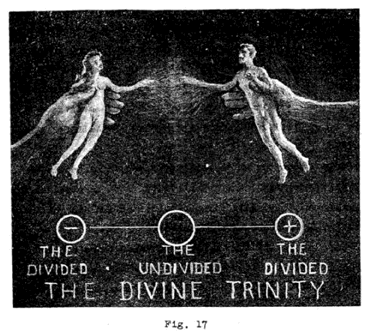
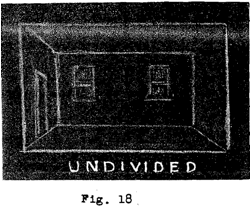
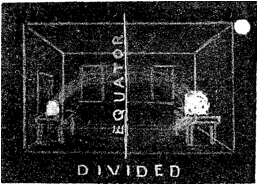
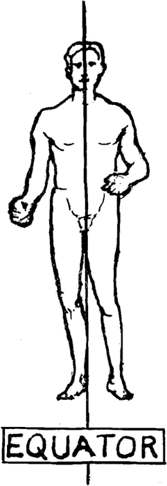
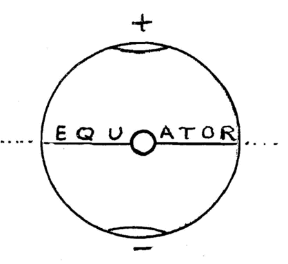
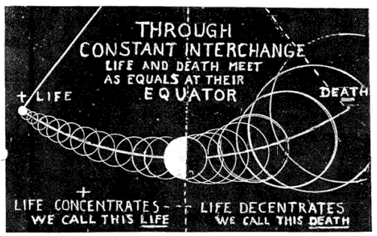

LESSON NUMBER 14¶
Once again I must talk to you as simply as though you were small children, for any thinking which is new MUST be presented simply.
I want to tell you how bodies are made and balanced with all other bodies–how God makes them and you make them, but if I just tell you that all bodies are electric wave vibrations packed close together to make solids and spread farther and farther apart to make liquids and gases I will be stating a truth–but you will not know specifically what I mean. You will but get a general, vague idea of it unless I tell you the way you teach your children to read by starting in with lettered blocks.
Vague general understanding is not sufficient. You must know specifically how bodies are made and kept in balance, and their every other function kept in balance, for mankind is ever walking a tightrope and depending absolutely upon his balancing extensions, and it is so easy to crash by loss of balance. The trouble with life is that all of us are continually losing our balance in hundreds of little things which almost pass unnoticed, but it is their sum total which gages both our safety and our progress.
You must know specifically how bodies are made and balanced by equators and God’s watchful eyes in the magnetic poles of all bodies, whether they be uncreated thought bodies or physically created material bodies–because that is all you are doing all of your life. What you ARE–and what you CREATE–depends upon what you KNOW. Ignorance never gets you far. Mankind knows less about creating bodies and balancing them, the life principle, self-energizing or self-vitalizing than any other subject.
Man knows how to use the energy for his machines expressed by falling waters–but has very little knowledge of how to use the energy of the universal heartbeat to vitalize and balance his own body, and the bodies he is forever creating with his thinking.
You make bodies because you desire to create them. You make them out of light, electricity, and motion directed by your will. You pattern them in your own image. The life you give them is your life as their bodies are also your body.
They are extensions of your body as your body is an extension of God’s body. You made your own body by your desire to extend it from God’s body. God made your body with you by the universal desire to manifest the man-idea as part of God’s One Whole Idea of Creation.
God could not create your body with you without desire to do so. Desire of Mind is the motivative force which energizes all Creation through the universal heartbeat of concentrative-decentrative thought pulsations. Likewise YOU cannot create bodies without the desire to do so. YOUR desire is YOUR motivating force.
All creating bodies are extensions of other creating bodies. You are now, and always have been creating your own body. You cannot extend that which you have not first created. Neither can you extend more than you have first created.
All thought bodies extended from your thought body by the desire of your Mind to create thought bodies manifest the measure of your knowing. Your thinking can never manifest more than you know no matter how great is your desire.
If you realize the fact that you are forever creating bodies by the use of electricity, energy, light and motion–and are balancing them with the immediate and universal environments you must know what these tools are that you are using, and you must know them as thoroughly and as dynamically as you know how to multiply two by two and conclude, rightly, that the answer is four.
I have not used this simple analogy without a good reason, and that reason is that it is no more difficult for you to FULLY comprehend ALL OF THESE ESSENTIALS for the building of thought-bodies than it is for you to multiply two by two, for God’s working principle is as simple as that.
Science should be as simple as God’s one working principle is, but science is extremely complex because it is unaware of that one working principle as manifested in The Divine Trinity.
I tell you all this because you are all afraid of science. I know that you are because hundreds of you have told me so. WHY are you afraid of it? Because of the tremendous complexity of the science you have read, a man-made complexity which has no relation to Nature. That is the reason you are afraid of it.
I do not blame you for being afraid of it. When the ordinary everyday layman reads about the electrons, protons, photons, neutrons, positrons and newly discovered particles in endless array–and when he is told of the 92 elements of matter and their complex structure, all of it couched in a terminology which is like Greek to him, and seems beyond his comprehension, I do not wonder that he shies from it.
But I say to you that there is nothing so complex in the [whole] field of science, whether in electro-dynamics, chemistry, astronomy or any other branch of science that anyone of the intelligence required to be a good pianist, or composer, good housewife or good business executive could not as easily master.
I also say to you that these many varieties of particles which frighten you away from science, are all of them the same particle of light corpuscle which seem to be different because they are in different parts of their wave fields and are, therefore, differently conditioned as to their polarity. And so would you seem to be different kinds of humans if some cosmic giant photographed you under his microscope one day when you trudged in knee deep snow with your fur coat, hat and mittens on, then later photographed you as a water animal with bathing trunks and sun hat.
Chemistry is as simple as music. The octave tones, harmonies and rhythms are the same. I could teach you chemistry from the musical octave, or the color spectrum as well as I could from the Mendeleef table. And I will say the same for mathematics or mechanics.
When I have taken you “behind the scenes” where God’s cosmic cinema is being played you will find no complexity there at all. You will find that when you thoroughly know the working principle of The Divine Trinity, so thoroughly that your own Consciousness is the centering zero of KNOWING from which all pairs of opposite expressions extend, you will suddenly realize that you have all-knowledge, for the answer to every question as to CAUSE and PRINCIPLE is within you.
When you have arrived at that point you will find yourself to be a very different kind of a person. You will, from now on, find yourself more and more dependent upon yourself, more SURE of yourself. You will find yourself talking less to dissipate your forming thought-bodies, and thinking more. The time will gradually come when you would not think of asking any other person on earth for advice upon anything whatsoever which you are planning to achieve or create.
You will find yourself going to books only for information, or to other men for technical skills, or to encyclopedic recordings which are not knowledge, but never for CAUSE or PRINCIPLE, for that knowledge is already within you and these lessons should awaken it in you sufficiently for you to recognize your own cosmic unity with the Omniscient ONE.
The greater your cosmic awareness the greater your Cosmic Consciousness–which means ALL-KNOWING.
SO LET US BEGIN ALL OVER AGAIN AT THE BEGINNING IN OUR SEARCH FOR COSMIC OMNISCIENCE
Remember that we are in a thought divided universe of thought created bodies. And by bodies I mean sounds as well as suns–the east wind as well as the insect–the electron as well as the elephant–the violet as well as the human–the song of the bird as well as the bird, and the machine as well as the inventor of it. So you now know what I mean by BODIES.
NEXT. Let us then remember that the thought divided universe means the division of thinking into its two pulsations of motion between CONCENTRATION and DECENTRATION.
NEXT. Let us never lose track of the fact that all of the pairs of opposites in all of this universe of effect are just other words for, or the mechanics of, CONCENTRATION and DECENTRATION. In other words CONCENTRATION and DECENTRATION are the root words for all pairs of opposites, whether HEAT and COLD, GRAVITATION and RADIATION, or any other pair.
NEXT. Remember also that all physical effects are but the electrical records of these two mental effects.
As a final thought in connection with what is now coming let me again repeat the fact that all opposites of every pair are born out of each other simultaneously and becomes the other sequentially.
These are the thoughts we must now expand and clarify. As a first step try to imagine God’s Mind thinking His One Idea of the FATHER-MOTHERHOOD of Creation. His KNOWING of that One Idea is formless in the undivided Light. To give it form He must divide the one equilibrium by extending it from its one balanced condition and give it two equally unbalanced conditions.
As I have before stated, the universal equilibrium is zero and cannot be divided, but it can seem to be divided by establishing an equator between two conditions which, together, add up to zero.

Archival Plate (image025.gif)¶
Now imagine God’s hands pulling the invisible ONE IDEA of Father-Motherhood apart to divide it into two visible forms, each of which are one half of the ONE IDEA. Instead of the invisible, formless and changeless One Idea God has thus created PAIRS OF OPPOSITELY CONDITIONED HALVES OF MANY IDEAS. That is what is called POLARITY, which means the division of one condition into two equal opposites. (See Fig. 17)
I have used the male and female figure to symbolize the division of all things into pairs of opposite sex mates but you must thoroughly understand that it is only a symbol, for every creating thing, and even the uncreated thoughts of things, are divided into pairs of opposite sex mates. By this I mean minerals, metals, liquids, vapors and everything in matter and space. Remember always that this is a sexed electric universe and all motion, everywhere, is sex interchange between opposite sex mates.
There you have it–the whole of Creation consists of PAIRS of OPPOSITELY CONDITIONED MATES–SEX MATES–POLARIZED HALVES of EACH OTHER.
Also you have the whole cause of balanced or unbalanced motion and a basic understanding of electricity. Let us consider each of these separately. We will first consider motion and what happens when motion is balanced or unbalanced.
Before God polarized the ONE into PAIRS there could not possibly be any motion whatsoever. In an equilibrium motion is impossible. It must be divided and extended from a mutual equator before motion is possible.
For example, consider yourself in a closed room of even temperature. There is no movement in it anywhere for it is an equilibrium and motion is impossible in an equilibrium. See Fig. 18.

Archival Plate (image026.gif)¶
If we put a bar of hot iron at one end and a cake of ice at the other end we have upset that equilibrium. It now follows the principle of The Divine Trinity. The one condition has been divided into two opposite conditions, the hot iron being a positive condition and the ice being the negative condition. See Fig. 19. Instead of the entire room being in equilibrium an equator has been developed between the divided two.
These two opposite conditions immediately reach out for the other toward their mutual equator. They each desire the other to find balance through each other, as all unbalanced pairs of opposites continually do.
That desire is sex desire for balance. Sex desire is electric and is manifested by an electric interchange of inward-outward, outward-inward pulsations which we call an electric current. The electric current will continue until both conditions have been equalized. All motion will have then ceased and the room will be completely in equilibrium as before. It will be in the condition which we call “dead” in a storage battery. It will have lost its polarity just as your self starter loses it by becoming depolarized when its opposite conditions have been equalized.
Now consider the separated father and mother conditions in Fig. 17 in this light. The ONE has been pulled apart to create TWO. The two conditions are positive and negative–a compressed condition and an expanded one which correspond with the concentration and decentration of the thought pulsations which caused them.
Now imagine that the pulling apart of the one into two caused a strain, or tension, as though there were many electric bands which held the two together as the invisible ONE. To pull them apart caused these bands to stretch against a resistance which pulled the other way.

Archival Plate (image027.gif)¶
The effect of two-way tension is the answer to what electricity is. The two-way desire to equalize that tension is the answer to what sex is–and the two-way interchange which is necessary to effect that equalization is what motion is, for when that equalization takes place electric current ceases, sex desire ceases and motion ceases.
Thinking divides the ONE balance and extends it. Electricity is the resultant effect which arises from division of balance and its extension to two balanced conditions.
Without desire for creative expression through thinking there could be no sex division. Without desire for balance there could be no sex desire. Without attainment of balance there could be no repetition. Without repetition there could be no continuity.
Your Mind which centers your body is eternal and never changing.
Your body which extends from your Mind is eternally repetitive and forever changing. You always have a body as you always have a Mind.
BASIS OF ALL OF LIFE’S PROBLEMS¶
The previous lesson ended with God’s law of balance for this new age of Cosmic Man. The answer to everything which is good or bad in your life lies in the measure in which you practice the law of balance, and your ability to practice it lies in the measure of your understanding of that law.
If you face a crashing defeat you must know how to meet it. The best way to do this is to search within your Consciousness to find how or where you have violated the law of balance in the principle of The Divine Trinity.
At such a time never seek the solution outside of yourself by telling a living soul of your problem who is not able to take your problem as his own. Your wife or husband may be the only one who is capable of becoming one with you in your problems and that only if your mate is one with you in all things.
Seek the solution within yourself. The answer is within yourself. Seek aloneness with your own Soul and talk to God about it. The more you know about His law of balance the better you can comprehend God’s universal language of Light in which God talks to you.
Likewise, the more you dynamically KNOW that principle as manifested in everything you do the less problems you will have to overcome. For that reason I shall talk to you at length concerning the principle and dramatize my teachings by human examples as to the application of that law to every phase of your life, from business to matrimony–from frustration to glorification–or from health to friendships.
God has given you something to guide your life actions which you probably never have given thought to. He has given you what is known as an equator, when applied to earth or sun. As applied to you it is a plane which divides your body into two equal and opposite halves and each opposite half symmetrically balances the other half–but in reverse.

Archival Plate (image028.gif)¶
Fig. 20
It is as though your body were vertically cut in halves from head to foot, and an invisible mirror placed there, for each half to reflect the other half in reverse. If you do not thoroughly grasp my meaning [go] and look in a mirror. The equator which divides you is the still magnetic Light which divides all things, but which, in itself, cannot be divided.
Perhaps you will meditate upon this subject with me and ask of yourself what significance the equator of your body has upon your health, happiness, success or other incidents of your life. There must be some vast significance to this one fact because every creating unit of organic and inorganic matter is similarly divided, every insect, plant, corpuscle of animal, vegetable or mineral matter, and every star, sun of planet in the heavens. See Figures 20 & 21.
Fig. 21 The vast significance of the equators of all creating things lies in the fact that the equators are the dividing planes of the universal equilibrium. They, therefore, represent the undivided, the unchanging spiritual Light from which the physical bodies of all things are extended.

Archival Plate (image029.gif)¶
The zero which is the center of gravity of all bodies centers the equators of all material bodies.
The Light of your Consciousness is on that portion of the equator of you which centers the two thought extensions of your brain.
The real, immortal YOU–the invisible YOU–controls the visible body of YOU from the equator of your body.
Everything you are in thought extends two ways from your Consciousness which is located upon your equator. Your senses vibrate from that equator when your equator is out of balance with the universal equilibrium, and cease to vibrate when it is in balance with it.
In the following chapters I will tell you much about the relation of your own particular equator which divides and controls your mental and physical lives in order that you may see how God is working with you in the unfolding of your destiny every moment of your lives.
Never forget that what you are DOING in the divided visible universe is a manifestation of what you are THINKING in the undivided invisible universe.
CONCLUSION¶
You will have a different viewpoint on life when you thoroughly comprehend how helpless you are without knowing God as One with you, and how powerful you are when you do know Him in you.

Archival Plate (image030.gif)¶
Fig. 22 - LIFE AND DEATH exemplified in THE DIVINE TRINITY
There is much to be said and explained but for this lesson I will close by illustrating for you that equator of The Divine Trinity which we call LIFE and DEATH. (See Fig. 22.)
Life and death are equal opposites. They are sexed mates, as all pairs of opposites are sexed mates. They interchange from the moment of birth, and that interchange is sex interchange. The purpose of that interchange is to seek balance with each other which is the sole purpose of all sex interchange between all pairs of opposites.
When life and death find balance they lose it–as all pairs of opposites perpetually lose the balance they perpetually seek the moment that they find it.
Life and death are born in the same cradle, but the cradle is a cycle, like the swinging of a pendulum, with an equator between the two from which life extends one way and death the other way.
Each inward breath you take is a rebirth toward life. Each outward breath is a rebirth toward death. As life and death continually interchange they approach each other until they meet at the half way point–the equator–of your life cycle.
From there on life is dying so that death may live, and death is living so that life may die.
There is no death in God’s universe, there is naught but perpetual rebirth into an endless repetition of rebirths.
Every opposite gives birth to its own opposite simultaneously and becomes its opposite sequentially.
You will remember God’s words as given in His Message of The Divine Iliad: “Know thou then that I alone live. I do not die, but out of Me comes both seeming life and death.
“Life is but the inward flow of My thinking’s divided pulsing, and death is its outward flow.
“Know thou also that the divisions of My thinking are but equal halves of One; for I again say that I am One; and that all things which come from Me are One, divided to appear as two.”